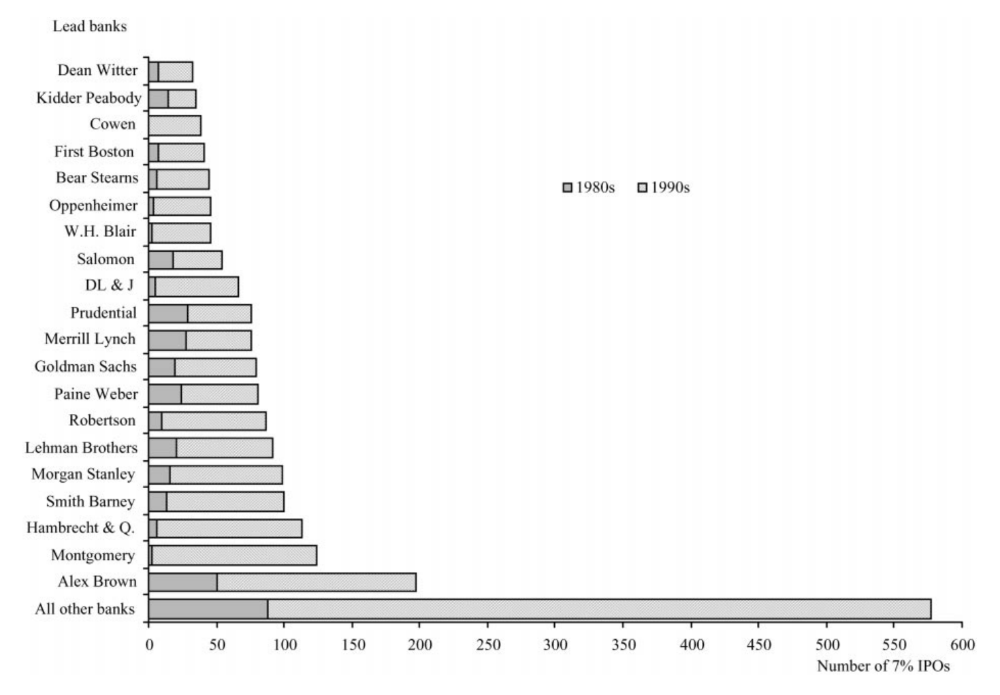
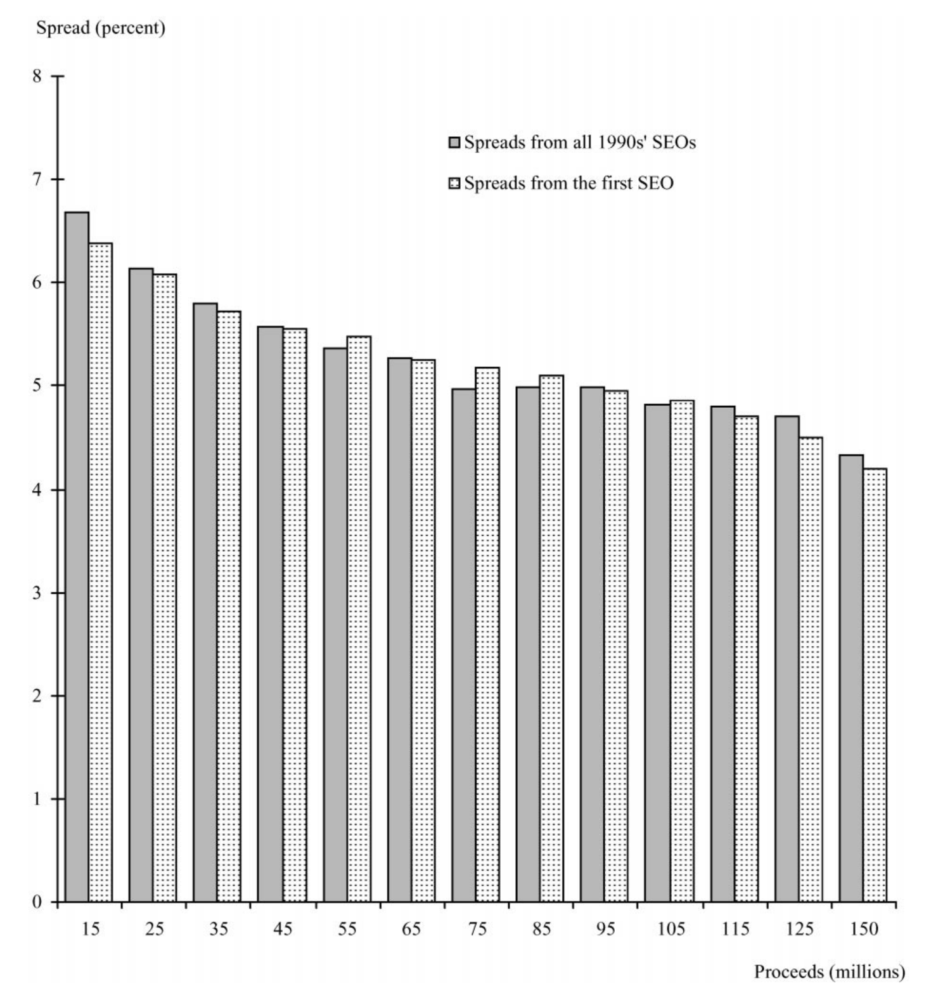
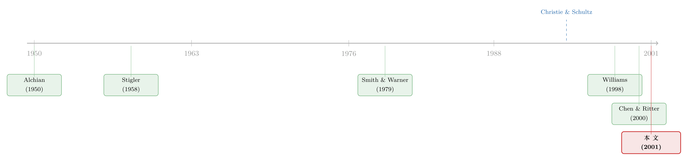

新股发行费为什么总是不多不少的 7%？
本文读的是 Hansen (2001, Journal of Financial Economics)：成百上千宗 IPO 把承销价差不约而同地定在 7%，这看上去像一桩华尔街的合谋，但作者用四组检验逐一证伪了「卡特尔」假说——市场集中度低、进入容易、7% 在反垄断调查曝光后照用不误，而且按非 7% 样本拟合的基准看，7% 「不仅不暴利，反而偏低」。真正的故事是：7% 是竞争筛选出来的高效合同，竞争没有消失，它只是转移到了声誉、配售与折价这些维度上——所以这份合同的真名，是「7% 外加可议价的折价」。
1 一个扎眼的巧合
先来看一个数字。1981 年，美国只有 6 宗 IPO 把承销价差（spread，承销团费用占募集额的百分比）定在 7%；到了 1990 年代，每年有数百宗新股，价差精确地停在 7% 这个点上。Hansen 在表 1 里给出了全样本的图景：4,153 宗 IPO、其中 3,237 宗工业类原始发行，平均价差 6.98%——而越往中间的发行规模看，7% 越是像一块磁铁，把所有报价都吸了过去。
这就奇怪了。在一个号称充分竞争的市场里，几十家投行、上千宗交易，价格怎么会齐刷刷地收敛到同一个数？
一个最自然、也最诛心的解释立刻浮出水面：合谋。如果这些投行私下约好「谁都别降价」，把价差牢牢钉在 7%，那这就是一桩教科书式的卡特尔（cartel）。事实上，这正是当时一桩轰动业界的指控的逻辑起点。Chen and Ritter (2000) 在那篇著名的《The seven-percent solution》里，倾向于认为这是独立投行之间的隐性合谋（implicit collusion）；他们的论文直接催生了一桩针对 27 家投行「不在价格上竞争」的集体诉讼，以及美国司法部对承销费固定行为的调查。
这条逻辑并非凭空而来。它师承 Christie and Schultz (1994) 的那项著名发现：纳斯达克做市商曾集体回避「奇数八分之一」报价，借此维持更宽的买卖价差；而当这一指控见报后，价差应声暴跌（Christie et al., 1994）。把同样的剧本套到 IPO 上，似乎顺理成章。
于是这篇论文要回答的核心问题，就被逼到了台前——
2 研究问题：是合谋，还是「最合身」的合同？
7% 的趋同，究竟是合谋的产物，还是竞争的产物？
Hansen 把两种理论摆上擂台。
卡特尔理论说：IPO 市场存在合谋，目的是从 7% 价差里榨取超额利润。高效合同理论（efficient contract theory）则说：7% 之所以胜出，是因为它在「最适合 IPO 的合同」这场竞争中活了下来。
这里用到的是一条古老而锋利的思想——幸存者原则（survivorship principle）（Alchian, 1950；Stigler, 1958）：在竞争市场里，一份合同能长期存活，本身就意味着它是高效的。Smith and Warner (1979) 讨论债券契约（bond covenants）时就用过这套逻辑：那些条款之所以以今天的形式存在，是因为它们恰是企业的高效契约解。
但这里真正关键的一步，是 Hansen 对「价格」二字的重新定义。他指出：IPO 合同是多维的——它不只有价差，还有折价（underpricing）、认证（certification）与营销服务。所以「把价差锁定在 7%」根本不是反竞争定价的证据，因为竞争完全可以在其他维度上决定这份合同的价钱。
打个比方：如果要请一家声誉更高的投行，发行人可以压低发行价，把新股折价做大、把投资者的兴趣吊起来，直到承销商承担的声誉风险恰好与 7% 对齐。折价替代了配售努力与声誉。 所以 7% 合同最准确的理解，是作者反复强调的那句话——「7% plus negotiated underpricing」（7% 外加可议价的折价）。
把这条主线攥住，后面的所有检验就都串起来了：如果竞争只是从价差转移到了折价，那么我们应该在价差之外、在折价那一头，看到竞争的指纹。
3 识别策略：四组互相独立的「证伪」
Hansen 的高明之处在于，他不去正面证明竞争，而是设计了一组针对合谋的证伪检验。逻辑是：合谋需要满足一系列苛刻的前提，只要任何一个前提被数据推翻，合谋假说就站不住脚。这四组检验大多彼此独立，结论却惊人地一致。
第一，市场集中度。 合谋通常与高度集中的市场相伴。Dutta and Madhavan (1997) 的隐性合谋模型里假设所有做市商同等规模、同等市场份额——但这对投行而言太不现实了。Hansen 举了个扎眼的对比：1999 年 3 月，按股权市值算，摩根士丹利是贝尔斯登的 10 倍、是 Hambrecht & Quist 的 75 倍。证据显示，整个 7% 时代里，集中度既低又稳定。
第二，进入。 无论显性还是隐性合谋，都必须把新进入者挡在门外。但 IPO 市场里进入的程度很高——光是承销中型发行（$20–80 million）的「其他银行」数量，在 1990 年代就比 1980 年代多了 149%，distinct banks 升到了 140 家。
这里值得停下来看一张图。如果 7% 真是某几家巨头牵头搞出来的「价格联盟」，那 7% 新股应该在这些银行里高度扎堆。但 Hansen 把用 7% 最频繁的 20 家牵头行单独拎出来比对后发现：1980 年代根本没有明显的银行专属起源或聚集。最早的 6 宗 7% IPO 发生在 1981 年，只有一宗出自后来的「高频行」（美林）；其余的 1982 年 4 宗则由别的银行牵头。7% 是慢慢「弥漫」开的，不是从某个山头点燃的。

Figure 2: Number of 7% spread IPOs by syndicate leading investmentbanks that used 7% most
第三，把纳斯达克实验搬到 IPO。 这是最漂亮的一招。Christie et al. (1994) 的逻辑是：合谋一旦被公开曝光，合谋行为应当迅速瓦解（纳斯达克价差当年应声而落）。那么——如果 IPO 的 7% 也是合谋，1998 年底集体诉讼与司法部调查曝光之后，7% 的使用率就该掉下来。结果呢？7% 的使用在调查曝光后并没有下降。 这一刀，几乎直接命中卡特尔假说的要害。
第四，7% 到底赚不赚超额利润？ Hansen 用美国公司非 7% IPO 支付的价差拟合出一个基准模型，再用估计出的系数去推算「如果按竞争定价，这些 7% 的发行该收多少」。结论相当反直觉：7% 的价差，若说有偏差，也是偏低，低到容不下超额利润。 Chen and Ritter (2000) 曾辩称 7% 高于外国 IPO 的价差、因而是暴利；但 Hansen 反驳说，那个基准没有考虑合同的多维性、承销商质量，以及美外初级市场之间的法律与制度差异。
四组检验，没有一组拒绝「IPO 市场是竞争的」这一假设——而竞争，正是高效合同得以成立的前提。
4 主要结果：竞争藏在折价里
证伪了合谋之后，Hansen 进入第二阶段：正面检验高效合同理论的推论。如果 7% 真是「7% 外加可议价的折价」，那么选择 7% 合同的，应当是那些更难估值、更需要高声誉认证的公司，而它们的竞争应当体现在折价上。
数据给出了相当干净的支持：
- Logistic 回归显示，通过 7% IPO 上市的公司更难估值、雇用了声誉更高的承销商，并且折价显著更高。
- Tobit 回归进一步显示，7% 这组公司的折价，在「公司更难估值」和「雇用更高声誉投行」时更大；而非 7% 的 IPO，折价对这些特征的敏感度则明显更低。
换句话说，7% 合同里有更多的价格变动被塞进了折价里——这恰恰是「价格竞争转移到了另一个维度」的指纹。整体上，结果与「牵头行在 7% IPO 里凭声誉、折价与配售服务展开竞争」高度一致。（关于「7% 这把固定的尺子如何反过来改写新股折价」，可参见《7% 这把「固定的尺子」，竟能改写新股的价格》；而 7% 现象其实也跨越了国界，见《「七个点」也跨了国》。）
这里还藏着一个对卡特尔理论格外棘手的「凹形之谜」。1990 年代 7% 的整体使用率是 75%，但它并不均匀：小型 IPO（$10–20M）只有 61%，$20–40M 区间高达 88.5%，而越往大走越低——$80–100M 是 72%、$100–110M 是 62%、$110–120M 骤降到 32%、超过 $120M 只剩 6%。
为什么是这条两头低、中间高的凹形曲线？卡特尔理论很难自圆其说：在大型 IPO 上，7% 的利润会大到撑破联盟（该降价）；在小型 IPO 上，非 7% 的价差通常高于 7%（用来覆盖固定承销成本），那卡特尔大可对小单收更高的价差而不必担心有人叛逃——既然如此，为什么 1990 年代偏偏冒出 258 宗小型 7% IPO，比 1980 年代的 58 宗暴增 445%？而且 7% 在大型 IPO 里是逐渐淡出的，不是 Chen and Ritter 所说的「越过某个临界规模就触发价格战、骤然消失」。
高效合同理论却能解释这条凹形：协商价差本就随发行规模递减（规模经济，见 Altınkılıç and Hansen, 2000），于是大量 IPO 都会出现「价差缺口」；而 7% 通过简化谈判、压缩讨价还价的维度，恰好对那些谈判收益不高的中型发行最有吸引力。
5 高效合同好在哪：三条「省心」的经济学
那么退一步问：为什么是一份固定价差的合同活了下来？Hansen 给了三个互补的机制，全都指向同一个词——降低摩擦。
其一，收窄信息外部性。 投机性 IPO 公司的事前估值误差极大。一个偏离预期的价差，会让投资者起疑：异常窄的价差是不是在配合「抬高估值」的把戏？异常慷慨的价差是不是在暗示高估？统一的价差消除了「承销费到底会是多少」的猜疑，从而降低了承销商和管理层事后被诉「故意错估」的风险。
其二，减少道德风险。 由于估值误差大，承销商的配售努力很难被验证。在非 7% IPO 里，价差会随「为抬价而付出的代价」而下降——这等于变相惩罚了努力搜寻更高价格的承销商。而平坦的固定价差提供了一种简单的事前委托监督机制，鼓励搜寻、抬升价值。Williams (1998) 就用一个竞争均衡模型解释了美国住宅市场里那条恒定的 6% 经纪合同：跨所有经纪人与客户的固定佣金，最小化了代理问题。
其三，降低缔约成本。 在传统的增发（SEO）合同里，价差要和超额配售选择权、募集额、发行价一起谈，而这些条款彼此纠缠、共享决定因素（Hansen, 1986）。IPO 还要再叠加「上市后股价不确定」这层迷雾。7% 合同通过减少待谈条款、削掉冗余的讨价还价，把这个更复杂的缔约环境大大简化了。这就像 Ball et al. (1985) 发现的：波动大的股票常被报在 1/2 这样的「整数宽价位」上，而非 1/4、3/8 这种零碎刻度——人们天然偏好一个「最顺理成章的数」。而非 7% IPO 的平均价差本就接近 7%，四舍五入后，7% 便成了一个强有力的焦点（focal point）。
6 反转的反转：会不会是更隐蔽的合谋？
故事到这里似乎可以收尾了。但 Hansen 没有放过最后一种可能——会不会存在一种更微妙的合谋，巧妙到连前面的利润检验都照不出来？
他给了两种「藏利润」的途径，并分别检验。
途径一：利润被分散到了更广的合谋里。 也许 IPO 本身不暴利，但同一批投行在关系紧密的增发（SEO）市场里把利润收了回来。如果存在这种更广的合谋，SEO 市场里也该出现类似的固定价差行为。Hansen 于是把符合 IPO 样本标准的 SEO 拉出来比对——结果是：SEO 市场里并不存在固定价差。

Figure 5: Matched mean spreads in two samples of industrial primary seasoned equity o!erings
途径二：卡特尔利润经由别的渠道收取，比如折价、或发行人后续首次 SEO 的价差。但数据显示：折价与 IPO 市场的集中度无关；发行人的首次 SEO 价差看起来也正常。
两条暗道都被堵死。至此，「微妙合谋」的假说也没能站住。
7 文献脉络
把这篇论文放回它所处的坐标系，会看得更清楚。
最上游是两条几乎不相干的思想支流。一条是产业组织里的幸存者原则：Alchian (1950) 与 Stigler (1958) 奠定了「能存活即高效」的逻辑，Smith and Warner (1979) 把它用到了债券契约上，证明现存条款是高效契约解。另一条是 IPO 折价的庞大文献，从 Rock (1985) 的「赢家诅咒」一路展开。
真正点燃这场争论的，是 Christie and Schultz (1994) 关于纳斯达克做市商回避奇数报价的合谋指控，以及 Christie et al. (1994) 那记「曝光即瓦解」的实锤。Chen and Ritter (2000) 把这套逻辑移植到 IPO，提出 7% 是隐性合谋的产物——并在现实中掀起了诉讼与监管调查的轩然大波。
与此同时，Williams (1998) 从另一侧提供了弹药：他证明住宅市场里恒定的 6% 经纪佣金，在竞争均衡下反而最小化了代理问题——这为「固定费率 ≠ 合谋」提供了理论先例。

Hansen (2001) 正站在这两股力量的交汇处：他承认 7% 趋同这个事实，却用一整套证伪检验把它从「合谋」的解释里拉了出来，安放进「高效合同 + 多维竞争」的框架。这篇论文的位置，是这场争论里少有的、站在竞争一边并拿出系统证据的一篇。
8 评论与延伸（Q&A + 研究方向）
(a) 几个可能的疑问
Q：「价差都固定在 7% 了」难道还不算反竞争定价的铁证吗？
不算——这正是全文的题眼。IPO 合同是多维的：价差、折价、认证与营销服务。把其中一个维度（价差）固定下来，竞争完全可以在另一个维度（折价、声誉）上进行。所以观察到价格趋同，并不能推出「价格竞争被消灭」；你得去看折价那一头有没有竞争的痕迹——而数据显示，有。
Q：和 Chen and Ritter (2000) 的分歧，本质上是什么？
本质是基准之争。Chen-Ritter 用外国 IPO 的价差作参照，认为 7% 偏高、因而暴利；Hansen 则用美国非 7% IPO 拟合出竞争基准，发现 7% 反而偏低。外国基准忽略了合同维度、承销商质量与中外初级市场的法律制度差异——一旦换一把更可比的尺子，「暴利」就消失了。
Q：「7% 在调查曝光后没有下降」这个检验，为什么这么有杀伤力？
因为它直接复用了 Christie et al. (1994) 给合谋设的「试金石」：纳斯达克的合谋一被曝光，价差就崩了。如果 IPO 的 7% 同属合谋，按同一逻辑它也该松动。它没有。这等于用对手最信赖的检验工具，反过来证伪了对手的假说。
Q：那条「两头低、中间高」的凹形使用率曲线，到底偏向哪种理论？
偏向高效合同。卡特尔理论预测的是「越过某个规模就突然弃用 7%」，而现实是大型 IPO 里 7% 逐渐淡出（72%→62%→32%→6%）；同时小型 IPO 里 7% 反而暴增。固定合同的「省心」价值在谈判收益不高的中型发行上最大、在两头最小，这条凹形于是顺理成章。
Q：SEO 检验为什么是关键的「补刀」？
它堵死了「利润藏在更广合谋里」的退路。如果真有跨市场的卡特尔，紧邻的 SEO 市场也该出现固定价差。但 SEO 市场里压根没有固定价差，折价也与 IPO 市场集中度无关——「微妙合谋」失去了藏身之处。
Q：幸存者原则会不会太「事后诸葛」——只要活下来就说它高效？
这是该理论一贯被诟病的地方：它有滑向「凡存在即合理」的风险。Hansen 的回应方式是不空谈原则，而是把高效合同翻译成可证伪的推论（谁选 7%、折价如何随特征变动、凹形曲线、SEO 无固定价差），再拿数据去碰。这比单纯断言「7% 活下来了所以它高效」要扎实得多。
(b) 几个可能的研究问题与提案
1. 把「7% 之谜」搬到公司债承销市场。
【经济故事】债券承销费同样存在某些「整数化」的惯例。若能在公司债初级市场里找到类似的费率聚集，就可以检验：它究竟是承销团合谋，还是固定费率在「难估值发行人 + 声誉认证」环境下的高效解？信用市场的违约风险维度比股票更丰富，"价差 + 其他维度补偿"的替代关系可能更显性。
【可行性】中。数据可用（SDC/Mergent FISD 有承销费与发行特征），识别可借鉴 Hansen 的「非聚集样本拟合基准」思路；难点在于债券折价（一级到二级的首日回报）不如股票折价干净，需要高质量的 TRACE 成交价来度量。
2. 外资发行人会不会系统性地偏离 7%？
【经济故事】Chen-Ritter 用外国 IPO 当基准，Hansen 反驳说中外制度差异未被控制。一个自然的延伸是：在美上市的外国公司（ADR/cross-listing），其承销价差结构是否随母国法律保护、信息不透明度系统性变动？这能直接检验「固定合同的省心价值是否随信息环境而变」。
【可行性】中。需要把发行人母国的投资者保护指数、会计透明度与价差/折价匹配；样本量在大型外资发行上偏薄，识别上要警惕选择性上市（能来美上市的本就是「好公司」）。
3. 用一次「准自然实验」检验幸存者原则的因果方向。
【经济故事】Hansen 的检验本质是横截面的相关证据。若能找到一次外生冲击——例如某项披露规则或诉讼判决，外生地改变了某类发行的缔约摩擦——就能看 7% 的使用率是否随缔约成本的外生变化而移动，从而把「高效」从「事后合理化」里解放出来。
【可行性】低到中。难点在于找到真正外生、且只作用于缔约摩擦而不直接影响其他维度的冲击；2003 年全球和解（Global Settlement）改变了研报与承销的关系，或许是个候选切口，但污染因素很多。
4. 投行声誉、折价与价差的三维「替代率」估计。
【经济故事】本文断言「折价替代了声誉与配售努力」，但没有把这个替代关系结构化地估出来。如果建一个简单的缔约模型，把价差、折价、声誉三者写成发行人的最优选择，就能估计出「为换更高声誉，发行人愿意多付多少折价」的边际替代率。
【可行性】中到高。数据齐备（Carter-Manaster 声誉评分、SDC 价差、CRSP 首日回报），方法可用工具变量或结构估计；这类「把替代率算出来」的工作，对理解承销定价的多维竞争很有价值。
9 我的判断
这篇论文最大的贡献，是把一个看似铁证如山的「合谋故事」拆成了一个可证伪的命题，再用四组互相独立、却结论一致的检验把它驳倒。尤其是「复用对手的纳斯达克试金石」和「用非 7% 样本拟合竞争基准」这两招，方法上既克制又有力——它没有去做无法完成的「证明竞争」，而是稳稳地完成了「证伪合谋」。在一桩同时牵动诉讼与监管的现实争议里，能拿出这样系统的反证，本身就是稀缺的。
但识别上仍有让我不踏实的地方。其一，全文骨架是横截面相关证据，幸存者原则始终带着「事后合理化」的隐忧——「7% 活下来所以它高效」与「7% 活下来因为大家不敢叛逃」在很多观测含义上是同构的，作者也坦承这一点。其二，那个「7% 不暴利、反而偏低」的结论，完全依赖非 7% 样本拟合出的基准模型；而选择非 7% 的发行本身可能是内生的（也许正是那些谈判收益高、或承销商关系特殊的发行才会偏离 7%），基准因此可能有偏。其三，把折价当作「另一个竞争维度」很有说服力，但折价也可能由信息不对称、诉讼风险等完全独立于价差的力量驱动，本文没有把这条替代关系结构化地钉死。
我接下来最想看到的，是有人把这套逻辑放进一次干净的外生冲击里做因果检验，或者把「价差—折价—声誉」的替代率真正估出来。在那之前，这篇论文给出的，是一个让人信服的「合谋证伪」与一个仍待因果落锤的「高效合同」——而这，已经足够把当年那场喧嚣的争论，拉回到证据的地面上了。
参考文献
- Alchian, A. (1950). Uncertainty, evolution and economic theory. Journal of Political Economy 58, 211–221.
- Altınkılıç, O., & Hansen, R. S. (2000). Are there economies of scale in underwriting fees?: evidence of rising external financing costs. Review of Financial Studies 13, 191–218.
- Ball, C. A., Torous, W. N., & Tschoegl, A. E. (1985). The degree of price resolution: the case of the Gold Market. Journal of Futures Markets 5, 29–43.
- Chen, H. C., & Ritter, J. R. (2000). The seven-percent solution. Journal of Finance 55, 1105–1132.
- Christie, W. G., Harris, J. H., & Schultz, P. S. (1994). Why did Nasdaq market makers stop avoiding odd-eighth quotes? Journal of Finance 49, 1841–1860.
- Christie, W. G., & Schultz, P. S. (1994). Why do Nasdaq market makers avoid odd-eighth quotes? Journal of Finance 49, 1813–1840.
- Dutta, P. K., & Madhavan, A. (1997). Competition and collusion in dealer markets? Journal of Finance 52, 245–276.
- Hansen, R. S. (1986). Evaluating the costs of a new equity issue. Midland Corporate Finance Journal.
- Hansen, R. S. (2001). Do investment banks compete in IPOs?: the advent of the 7% plus contract. Journal of Financial Economics 59, 313–346.
- Rock, K. (1985). Why new issues are underpriced. Journal of Financial Economics 15, 187–212.
- Smith, C. W., & Warner, J. (1979). On financial contracting: an analysis of bond covenants. Journal of Financial Economics 7, 117–161.
- Stigler, G. J. (1958). The economies of scale. Journal of Law and Economics 1, 54–71.
- Williams, J. T. (1998). Agency and brokerage of real assets in competitive equilibrium. Review of Financial Studies 11, 239–280.